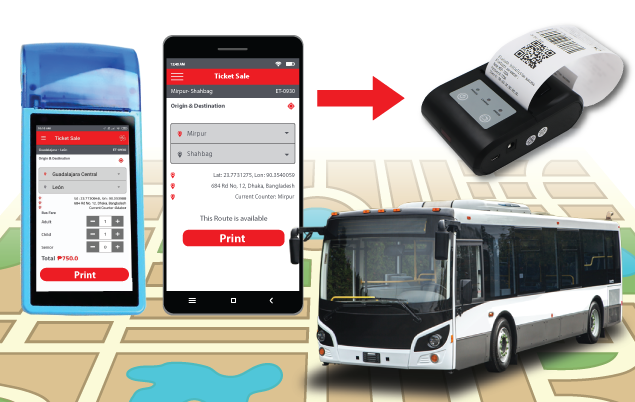
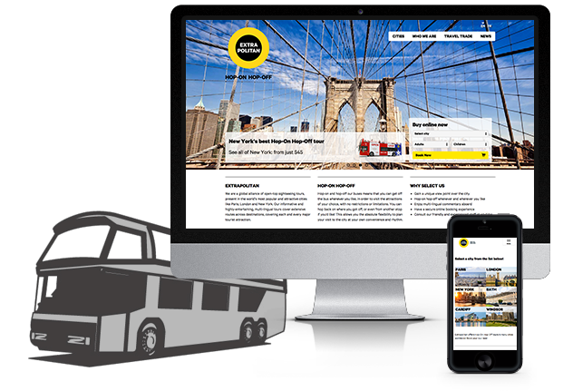

A bus ticketing system is a system that allows passengers to purchase tickets for bus travel in advance. This can be done through various channels such as online, at a physical ticket counter, or through a mobile app. The system typically includes a database of bus routes, schedules, and fare information, as well as the ability to process payments and issue electronic or physical tickets. One of the key benefits of a bus ticketing system is the convenience it offers to passengers. With the ability to purchase tickets in advance, passengers can plan their travel and avoid long lines at the bus station. Additionally, many systems offer the ability to purchase tickets through a mobile app, which allows passengers to purchase tickets on the go and avoid having to carry cash. Another benefit of a bus ticketing system is the ability to track and monitor ticket sales. This allows bus companies to better understand passenger demand and make adjustments to routes and schedules as needed. Additionally, the system can help bus companies to identify patterns of ticket purchasing, such as peak travel times, which can be used to optimize pricing and promotions. The bus ticketing system also provides a secure way of payment. The system accepts various payment methods such as credit card, debit card, and net banking, which eliminates the need to carry cash. The bus ticketing system also helps in reducing the carbon footprint by eliminating the paper usage. With the electronic ticketing system, the passenger needs to show the e-ticket on the mobile or printout, eliminating the need for paper tickets. Overall, a bus ticketing system offers a range of benefits to both passengers and bus companies. It provides convenience, tracking, and security, while also reducing the carbon footprint. Bus companies can use the system to better understand passenger demand and optimize pricing and promotions, while passengers can plan their travel and avoid long lines at the bus station.

Online bus ticketing is important for several reasons. Firstly, it provides convenience to customers by allowing them to purchase tickets from the comfort of their own homes or on the go, without the need to physically visit a bus station or ticket counter. This is especially beneficial for people who live in remote or rural areas, or for those who have busy schedules and cannot afford to take time out to purchase tickets in person. Secondly, online bus ticketing helps to reduce long queues and waiting times at bus stations, which can be a major source of frustration for customers. By allowing customers to purchase tickets in advance, online bus ticketing reduces the need for them to wait in line to buy tickets on the day of travel. Thirdly, online bus ticketing provides customers with more flexibility and options when it comes to booking their tickets. For example, customers can choose their preferred seats, travel dates, and routes, and can also take advantage of discounts and special offers. This allows customers to plan their trips more effectively and save money in the process. Fourthly, online bus ticketing enables efficient tracking and management of the bus schedules and routes, which can help to improve the overall efficiency of the bus service. This can also be used for future planning and decision making. Finally, online bus ticketing is beneficial for the environment as it reduces the need for paper tickets, which can save trees and other resources. Overall, online bus ticketing provides customers with a more efficient, convenient, and flexible way to purchase tickets, while also helping to improve the overall efficiency and sustainability of the bus service. It is an important step in the modernization of transportation services.